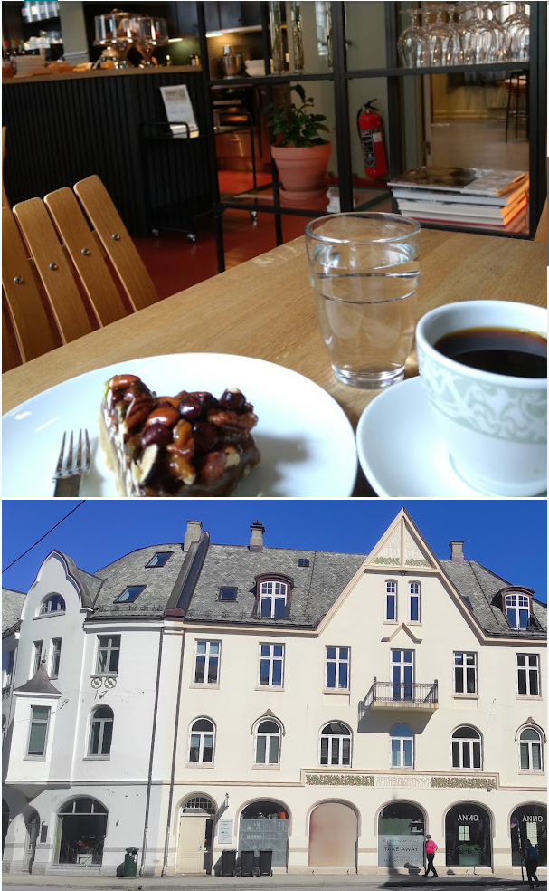

God kaffe
Velbrygget kaffe i et uformelt og koselig miljø — et høydepunkt for mange gjester.

Koselig kafé i Ålesund — god kaffe, ferske kanelboller og et rolig hjørne midt i byen.
Moderne kaffebar-preg i historiske omgivelser — perfekt til frokost, lunsj eller en stille kaffestund.
Velbrygget kaffe i et uformelt og koselig miljø — et høydepunkt for mange gjester.
Desserter og søtt fra ovnen — noen sier du kan se kanelbollene steke.
Populært for lunsj, å spise alene, og å jobbe på PC i rolige omgivelser.

Servering på stedet. Take away tilgjengelig. Vi har ikke levering.
Like ved Apotekertorget — i et område med historie i veggene og kaffe i koppen.

Inngang, bord og toalett tilpasset rullestol. Toalett for alle gjester.
Koselig, rolig og uformelt — med sitteområde og plass til en pause.
Debet, kreditt og NFC med mobil. Barnestoler og barnevennlig.
Om du er på jakt etter kaffe, en liten rett eller bare et sted å sitte — vi er her.
Les omtaler